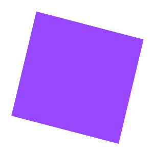

@biang.
Crafts
My
Blog Entries
What I’ve learned in Introduction to Computing lesson are the
foundational concepts and skills that are fundamental to the field
of computing. Learning the computer basics, gaining the
understanding of the components and functions of a computer system,
including the hardware, software, operating systems, and data
storage. Ethical and Legal issues, including topics like privacy,
intellectual property, and cyber security.
As an EMC-DAT student, delving into the complexity of “How the
Computers Work” is a foundational journey that unveils the underlying
magic powering our digital world. This fundamental lesson transcends
the surface-level interactions with devices, providing a comprehensive
understanding of computer architecture, hardware components and
software allows me a student to work more effectively with multimedia
applications. Also, the technology landscape evolves rapidly.
Understanding the fundamentals of computing ensures that I can adapt
to new technologies, tools, and trends more effectively.
The Information Age has brought about tremendous advancements and
opportunities, but it also presents various dangers and challenges
that society needs to address. Privacy concerns is a top tier of the
information age, with the widespread use of the internet and digital
technologies, personal information has become more vulnerable.
Cybersecurity Threats, as technology advances, so do cyber threats.
Misinformation and Disinformation, the ease of sharing information
online has led to the rapid spread and misinformation and
disinformation. lastly, Social isolation and Mental health issues,
while digital connectivity has its advantages, excessive screen time,
social media addiction, and the reliance on digital communication have
been linked to social isolation, mental health issues like depression
and decline in face-to-face interactions.
A lesson that challenged me the most is making this website because I
only learned this lesson through youtube, and it is hard for me to
understand if its not taught face-to-face. I can only copy but cannot
make an original work.
made by Bianca Garcia

Biang Crafts is the name of my business
Crafted with Love, Blooms that Last: Paper Flower & Ribbon Flower
Bouquets
I am so proud to present that I have a business to flex. I made this
all by myself. This is just one of my hobbies and I never knew I can
make a money just making these flowers. If you want a gift that
doesn’t wither, stays last long, and are affordable, these flower
bouquets are the best option you can have. Just visit my facebook
account, Biang Crafts.
At Paper & Ribbon Flower, we're passionate about crafting delicate
moments that last a lifetime. You can customize your bouquet to make
it unique.
MY BUSINESS
Biang
Crafts
BIO
About us
Message
made by Bianca Garcia